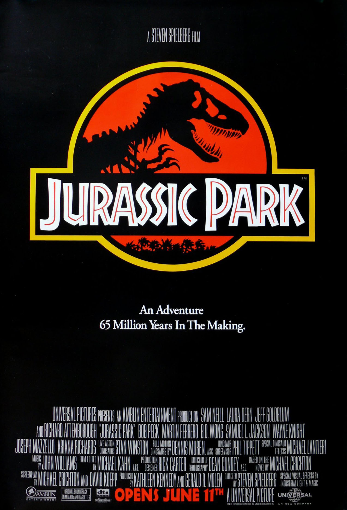
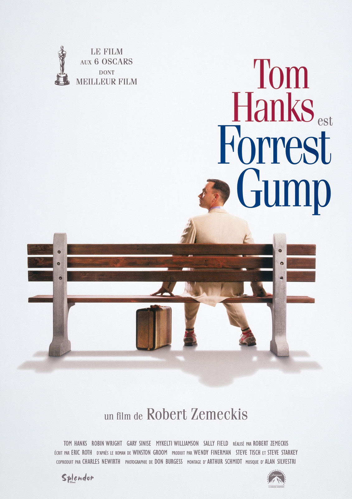

Guillaume Dutti
Student @Le Wagon
After 3 years in financial markets, I got bored and launched Le Wagon. Our mission: bring technical skills to creative people.
My Favorite movies
|  |
1993 - Jurassic ParkJohn Parker Hammond, le PDG de la puissante compagnie InGen, parvient à donner vie à des dinosaures grâce à la génétique et décide de les utiliser dans le cadre d’un parc d'attractions qu’il compte ouvrir sur une île au large du Costa Rica. |
|  |
1994 - Forest GumpLe film relate l'histoire mouvementée des États-Unis entre les années 1950 et les années 1980 au travers du regard d'un « simple d'esprit », Forrest Gump, qui devient involontairement l'acteur central, voire l'instigateur des principaux événements de cette époque en Amérique. |

|
1976 - DriverTravis Bickle, un jeune homme du Midwest et ancien marine, est chauffeur de taxi de nuit à New York. Insomniaque et solitaire, il rencontre Betsy, une assistante du sénateur Charles Palantine, candidat à la présidentielle, mais elle le repousse après qu'il l'a emmenée voir un film pornographique. Renvoyé à sa solitude et confronté à la violence et à la perversion de la nuit new-yorkaise, il achète des armes au marché noir et s’entraine à les manier. |